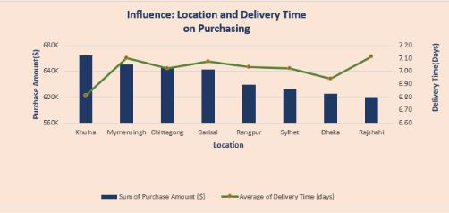

S. M. Shahidullah
Kaiser Talib
Data Analyst | Transforming Data into Actionable Insights
View My WorkAbout Me
Data Analyst with Passion for Insights
I specialize in transforming complex datasets into meaningful stories and actionable business intelligence. With expertise in statistical analysis, data visualization, and machine learning, I help organizations make data-driven decisions that drive growth and efficiency.
Proficient in Python, SQL, Tableau, and Power BI. Experienced in end-to-end data projects from data collection to stakeholder presentations.
My Resume
Skills
Excel & Tools
Advanced Excel, Google Sheets, ETL processes
SQL & Databases
Advanced querying, optimization, and database design
Python
Pandas, NumPy, Matplotlib, Seaborn
Data Visualization
Tableau, Power BI, Looker Studio
Machine Learning
Classification, Clustering, Data Preprocessing, Neural Networks, Decision Trees
Artificial Intelligence
Generative Ai, Promt Engineering
Background
Education
BSc Computer and Communication Engineering
International Islamic University Chittagong | 2020-2025
Thesis: A Hybrid Res-BRNet Architecture for Efficient and Accurate Brain Tumor. Achieved 98.83% accuracy in real-world deployment.
CGPA: 3.276/4.0
Higher Secondary School Certificate - 2019
Kazem Ali School and College – Chittagong |2017-2018
Group: Science | Strong interest in Physics and Information Communication
Secondary School Certificate | 2017
Chittagong Municipal Model School and College | 2015-2016
Group: Science | Strong interest in Physics, with active participation in extracurricular activities. Participated in the National High School Programming Contest (2016) held at CUET.
Experience
Teaching Assistant
International Islamic University Chittagong | Jan 2024 - Jun 2024
Assisted in Web Programming & DBMS courses; guided 150+students, graded assignments, and supported lab sessions.
Research Publications
A Hybrid Res-BRNet Architecture for Efficient and Accurate Brain Tumor Classification
The growing presence of brain tumors emphasizes in the field of neuro-oncology the need of exact and efficient diagnostic tools. An indispensable tool for brain tumor identification is Magnetic Resonance Imaging (MRI). Yet, the complexity of manually interpreting MRI scans results from the variation of tumors...
Read Full ArticleFace Recognition Using Pre-Trained CNN Embeddings and a Custom Deep Neural Network
Facial recognition technology has seen rapid advancements and development, especially with the adoption of deep learning algorithms. In this method, a custom Deep Neural Network (DNN) model is trained on two different datasets.
Read Full ArticleFake News Detection via Text Feature Integration and Convolutional Neural Networks
Social media’s unprecedented fake news epidemic threatens public discourse and information trust. While fake news detection methods have shown promise, they often struggle to capture subtle textual nuances and contextual inconsistencies that distinguish genuine articles from fakes.
Read Full ArticleFeatured Projects

National Data Innovator Challenge
AI Expert Career (2024)
Solved real e-commerce business problems through data analysis, delivering actionable growth recommendations.
National Data Innovator Challenge
AI Expert Career (2024)
Solved real e-commerce business problems through data analysis, delivering actionable growth recommendations.
National Data Innovator Challenge
AI Expert Career (2024)
Solved real e-commerce business problems through data analysis, delivering actionable growth recommendations.
Get In Touch
Address
Chittagong, Bangladesh
Available for remote work worldwide